Histórico de Versão e Contribuição¶
| Data | Versão | Descrição | Autor(es) | Revisor(es) | Declaração de Uso de IA |
|---|---|---|---|---|---|
| 26/09/2026 | 1.0 |
Lista de verificação referente à entrega 2 (publicada em verif2.md). | Arthur Mariani | Carlos Costa | Claude (Anthropic): uso declarado pelo autor (sem detalhamento da finalidade) |
| 19/11/2026 | 2.0 |
Inclusão dos Itens do Desenvolvimento do Projeto e dos 12 itens de conteúdo do Plano de Ensino; autoria por item de acordo com o conteúdo; correção de itens; novos itens de cenários, GOMS e perfil; prints das referências. | Gabriel Melo | Arthur Mariani | Claude (Anthropic): uso declarado pelo autor (sem detalhamento da finalidade) |
Lista de Verificação: Entrega 2 (versão 2.0)¶
Versão 2.0 — rastreabilidade
Esta é a versão 2.0 da lista. A versão 1.0 continua disponível, sem alterações de conteúdo, em verif2.md. O índice das listas de verificação mostra onde está cada versão.
Introdução¶
Esta lista verifica os artefatos da Entrega 2: Perfil do usuário, Aspectos Éticos de Pesquisas Envolvendo Pessoas e Análise de Tarefas (com personas e cenários). A versão 1.0 tinha 79 itens, numerados de 1 a 79, sobre coleta de dados, ética, entrevistas, questionários, brainstorming, CTT, personas e HTA. Na versão 2.0 eles mantêm o mesmo número com o prefixo G (o item 23 da v1.0 é o G23), e os itens novos começam no G80. Os itens G1–G79 foram redigidos por Arthur Mariani na v1.0; agora cada um indica também o integrante responsável pelo conteúdo verificado.
Para cada item, quem avalia marca Sim, Não ou Incompleto, como no Plano de Ensino (SALES, 2026). Quando um item não se aplica ao artefato avaliado, escreva N/A na linha e explique em Observações no registro da avaliação. A coluna Autor(es) do item indica quem escreveu a pergunta e quem é responsável pelo conteúdo verificado. Nos itens do professor, a pergunta é de André Barros de Sales e o integrante indicado é quem produziu o conteúdo e a evidência. A coluna Referência leva ao print grifado da fonte, no fim da página. As páginas do livro são as páginas impressas do IHC.pdf (BARBOSA et al., 2021, versão de 03/05/2021).
Os itens estão organizados assim: primeiro os Itens do Desenvolvimento do Projeto (D1–D11), que se repetem em todas as listas; depois os itens de conteúdo do professor (quando a entrega tem lista no Plano de Ensino); por fim, os itens de conteúdo elaborados pelo grupo (código G).
1. Itens do Desenvolvimento do Projeto¶
O Plano de Ensino define onze itens de desenvolvimento que valem para todos os artefatos (SALES, 2026, pp. 8–9). Eles aparecem primeiro em todas as listas do grupo, da Entrega 1 à Entrega 7 (veja a Tabela 1). Nas Entregas 3 e 4, o Plano fala em “Todos os 10 itens”, mas a lista do professor tem 11; por isso os 11 foram mantidos.
Tabela 1: Itens do Desenvolvimento do Projeto (Avaliar: o próprio grupo e o grupo +1)
| Código | Pergunta de verificação | Autor(es) do item | Referência | Sim | Não | Incompleto |
|---|---|---|---|---|---|---|
| D1 | O histórico de versão padronizado? | Pergunta: André Barros de Sales (Plano de Ensino) Inclusão na lista: Gabriel Melo |
Fig. 1 | ☐ | ☐ | ☐ |
| D2 | O(s) autor(es) e o(s) revisor(es) para cada artefato? | Pergunta: André Barros de Sales (Plano de Ensino) Inclusão na lista: Gabriel Melo |
Fig. 1 | ☐ | ☐ | ☐ |
| D3 | Referências bibliográficas e/ou bibliografia em todos os artefatos? | Pergunta: André Barros de Sales (Plano de Ensino) Inclusão na lista: Gabriel Melo |
Fig. 1 | ☐ | ☐ | ☐ |
| D4 | As tabelas e imagens possuem legenda e fonte e são chamadas dentro do texto? | Pergunta: André Barros de Sales (Plano de Ensino) Inclusão na lista: Gabriel Melo |
Fig. 1 | ☐ | ☐ | ☐ |
| D5 | Um texto fazendo uma introdução dos artefatos? | Pergunta: André Barros de Sales (Plano de Ensino) Inclusão na lista: Gabriel Melo |
Fig. 1 | ☐ | ☐ | ☐ |
| D6 | O cronograma executado com quem realizou cada artefato/atividade, com as datas de início e fim da construção/realização do artefato/atividade? | Pergunta: André Barros de Sales (Plano de Ensino) Inclusão na lista: Gabriel Melo |
Fig. 1 | ☐ | ☐ | ☐ |
| D7 | Ata(s) da(s) reunião(ões) (com data, horário de início e do final, participantes, objetivo, atividades definidas etc.)? | Pergunta: André Barros de Sales (Plano de Ensino) Inclusão na lista: Gabriel Melo |
Fig. 1 | ☐ | ☐ | ☐ |
| D8 | A gravação da reunião do grupo? | Pergunta: André Barros de Sales (Plano de Ensino) Inclusão na lista: Gabriel Melo |
Fig. 1 | ☐ | ☐ | ☐ |
| D9 | Vídeo de apresentação na categoria “não listado” no YouTube? | Pergunta: André Barros de Sales (Plano de Ensino) Inclusão na lista: Gabriel Melo |
Fig. 1 | ☐ | ☐ | ☐ |
| D10 | Tabela de contribuição no início do artefato com o nome de todos os integrantes, com a contribuição de cada integrante e hiperligação para a atividade e para a gravação, se houver? | Pergunta: André Barros de Sales (Plano de Ensino) Inclusão na lista: Gabriel Melo |
Fig. 1 | ☐ | ☐ | ☐ |
| D11 | A seção de agradecimentos apresentando o uso de Inteligência Artificial (IA) Generativa no artefato? | Pergunta: André Barros de Sales (Plano de Ensino) Inclusão na lista: Gabriel Melo |
Fig. 1 | ☐ | ☐ | ☐ |
Fonte: SALES (2026, Plano de Ensino, pp. 8–9), lista de verificação sugerida — Itens do Desenvolvimento do projeto.
2. Itens de conteúdo da disciplina (Plano de Ensino)¶
A Tabela 2 traz os 12 itens de conteúdo da Entrega 2 do Plano de Ensino. A versão 1.0 não tinha esses itens.
Tabela 2: Itens de conteúdo da Entrega 2 definidos pelo professor
| Código | Pergunta de verificação | Autor(es) do item | Referência | Sim | Não | Incompleto |
|---|---|---|---|---|---|---|
| C1 | O perfil do usuário é definido por mais de uma forma (técnica de elicitação e/ou ferramenta)? | Pergunta: André Barros de Sales (Plano de Ensino) Conteúdo e evidência: Gabriel Melo e Rodrigo Carvalho |
Fig. 2 Fig. 3 |
☐ | ☐ | ☐ |
| C2 | O perfil do usuário possui os atributos de um perfil (dados demográficos; experiência no cargo; informações sobre a empresa; educação etc.), com referência e foto do texto da referência (Barbosa et al., 2021)? | Pergunta: André Barros de Sales (Plano de Ensino) Conteúdo e evidência: Gabriel Melo |
Fig. 2 Fig. 4 |
☐ | ☐ | ☐ |
| C3 | O perfil do usuário define os grupos de atributos do capítulo 8 — Organização do Espaço de Problema: idade; experiência; atitudes; tarefas primárias? | Pergunta: André Barros de Sales (Plano de Ensino) Conteúdo e evidência: Carlos Costa |
Fig. 2 Fig. 5 |
☐ | ☐ | ☐ |
| C4 | Considera os aspectos éticos de pesquisas envolvendo pessoas? | Pergunta: André Barros de Sales (Plano de Ensino) Conteúdo e evidência: Igor Dantas |
Fig. 6 Fig. 7 |
☐ | ☐ | ☐ |
| C5 | Apresenta os 4 princípios (da autonomia, da beneficência, da não maleficência e da justiça e equidade)? | Pergunta: André Barros de Sales (Plano de Ensino) Conteúdo e evidência: Igor Dantas |
Fig. 6 Fig. 8 |
☐ | ☐ | ☐ |
| C6 | Informa que solicitará a permissão para gravar a voz ou a imagem de qualquer pessoa antes de começar a gravação? | Pergunta: André Barros de Sales (Plano de Ensino) Conteúdo e evidência: Arthur Mariani |
Fig. 6 Fig. 9 |
☐ | ☐ | ☐ |
| C7 | Apresenta o termo de consentimento livre e esclarecido (TCLE) dos participantes? | Pergunta: André Barros de Sales (Plano de Ensino) Conteúdo e evidência: Arthur Mariani e Igor Dantas |
Fig. 6 Fig. 9 |
☐ | ☐ | ☐ |
| C8 | Foram utilizadas no mínimo duas técnicas para coletar dados e levantar os requisitos dos usuários (entrevistas, grupos de foco, questionários, brainstorming, card sorting, estudos de campo, investigação contextual)? | Pergunta: André Barros de Sales (Plano de Ensino) Conteúdo e evidência: Carlos Costa e Lucas Araújo |
Fig. 6 Fig. 3 |
☐ | ☐ | ☐ |
| C9 | Os cenários? | Pergunta: André Barros de Sales (Plano de Ensino) Conteúdo e evidência: Igor Dantas |
Fig. 10 Fig. 11 |
☐ | ☐ | ☐ |
| C10 | A análise de tarefas? | Pergunta: André Barros de Sales (Plano de Ensino) Conteúdo e evidência: Gabriel Melo |
Fig. 10 Fig. 12 |
☐ | ☐ | ☐ |
| C11 | Uma atividade para cada integrante do grupo, modelada em ao menos duas técnicas para especificar as tarefas (HTA com diagrama, legenda e representação em tabela; GOMS: KLM, CMN-GOMS, CPM-GOMS; CTT)? | Pergunta: André Barros de Sales (Plano de Ensino) Conteúdo e evidência: Tomás Rocho |
Fig. 10 Fig. 13 Fig. 14 Fig. 15 |
☐ | ☐ | ☐ |
| C12 | Utilizaram alguma técnica para especificar as tarefas? | Pergunta: André Barros de Sales (Plano de Ensino) Conteúdo e evidência: Arthur Mariani |
Fig. 10 Fig. 12 |
☐ | ☐ | ☐ |
Fonte: SALES (2026, Plano de Ensino, pp. 9–11); referências do conteúdo em BARBOSA et al. (2021).
3. Itens de conteúdo elaborados pelo grupo¶
As seções 3.1 a 3.12 trazem os itens do grupo. As referências estão nos capítulos 7 e 8 de Barbosa et al. (2021).
3.1 Que dados coletar (perfil de usuário)¶
Os itens desta seção estão na Tabela 3.
Tabela 3: Que dados coletar (perfil de usuário)
| Código | Pergunta de verificação | Autor(es) do item | Referência | Sim | Não | Incompleto |
|---|---|---|---|---|---|---|
| G1 | Foram coletados dados demográficos, como idade, sexo e status socioeconômico? | Gabriel Melo | Fig. 4 | ☐ | ☐ | ☐ |
| G2 | Foram coletados dados sobre a experiência no cargo atual, como cargo, experiência, tempo na organização, responsabilidades, cargos anteriores e plano de carreira? | Gabriel Melo | Fig. 4 | ☐ | ☐ | ☐ |
| G3 | Foram coletados dados sobre a organização, como tamanho e área de atuação? | Gabriel Melo | Fig. 4 | ☐ | ☐ | ☐ |
| G4 | Foram coletados dados sobre educação, incluindo formação, cursos, alfabetismo, leitura, experiência com textos complexos e preferências de aprendizagem? | Gabriel Melo | Fig. 4 | ☐ | ☐ | ☐ |
| G5 | Foram coletados dados sobre a experiência do usuário com computadores, como alfabetismo computacional, habilidade, anos de experiência, sistemas e hardware utilizados? | Gabriel Melo | Fig. 4 | ☐ | ☐ | ☐ |
| G6 | Foram coletados dados sobre a experiência com o produto específico ou ferramentas semelhantes, incluindo produtos concorrentes, hábitos de uso, preferências e descontentamentos? | Rodrigo Carvalho | Fig. 4 | ☐ | ☐ | ☐ |
| G7 | Foram coletados dados sobre a tecnologia disponível ao usuário, como hardware, software e outras ferramentas às quais tem acesso? | Rodrigo Carvalho | Fig. 4 | ☐ | ☐ | ☐ |
| G8 | Foram coletados dados sobre o treinamento do usuário, suas preferências de aprendizagem e o tempo que pode investir para aprender a utilizar o produto? | Rodrigo Carvalho | Fig. 4 | ☐ | ☐ | ☐ |
| G9 | Foram coletados dados sobre atitudes e valores do usuário, como disposição para assumir riscos, explorar alternativas e aprender novas tarefas? | Rodrigo Carvalho | Fig. 4 | ☐ | ☐ | ☐ |
| G10 | Foram coletados dados sobre o conhecimento do usuário no domínio, incluindo o que conhece, seu nível de especialização e a expectativa de se tornar especialista? | Rodrigo Carvalho | Fig. 4 | ☐ | ☐ | ☐ |
| G11 | Foram coletados dados sobre os objetivos do usuário e como eles são alcançados atualmente? | Carlos Costa | Fig. 4 | ☐ | ☐ | ☐ |
| G12 | Foram coletados dados sobre as tarefas do usuário, incluindo tarefas apoiadas, primárias e secundárias, frequência, inovação e experiência com tarefas semelhantes? | Carlos Costa | Fig. 4 | ☐ | ☐ | ☐ |
| G13 | Foram coletados dados sobre a gravidade dos erros e suas possíveis consequências para o usuário? | Carlos Costa | Fig. 4 | ☐ | ☐ | ☐ |
| G14 | Foram coletados dados sobre a motivação para o trabalho, como carga horária, prazer, interação social e ambição de promoção? | Carlos Costa | Fig. 4 | ☐ | ☐ | ☐ |
| G15 | Foram coletados dados sobre idiomas e jargões usados pelo usuário, pela organização, pela atividade ou por grupos sociais relevantes? | Carlos Costa | Fig. 4 | ☐ | ☐ | ☐ |
Fonte: itens G1–G79: Arthur Mariani (2026, v1.0), revisados e com autoria por conteúdo na v2.0; itens G80–G87: Grupo 05 (2026). Base: BARBOSA et al. (2021).
3.2 De quem coletar dados¶
Os itens desta seção estão na Tabela 4.
Tabela 4: De quem coletar dados
| Código | Pergunta de verificação | Autor(es) do item | Referência | Sim | Não | Incompleto |
|---|---|---|---|---|---|---|
| G16 | Os dados foram coletados identificando o tipo de usuário: primário, secundário e demais stakeholders? | Gabriel Melo | Fig. 16 | ☐ | ☐ | ☐ |
| G17 | Foram identificados todos os stakeholders afetados pelo sistema, e não apenas os usuários finais? | Gabriel Melo | Fig. 16 | ☐ | ☐ | ☐ |
| G18 | Foi feito o mapeamento das diferenças entre usuários primários e usuários secundários? | Gabriel Melo | Fig. 16 | ☐ | ☐ | ☐ |
| G19 | A equipe considerou uma análise competitiva de IHC para mapear pontos fortes e fracos de produtos concorrentes ou substitutos? | Gabriel Melo | Fig. 17 | ☐ | ☐ | ☐ |
| G20 | Foram consideradas as limitações do uso de arquivos de log para evitar conclusões equivocadas sobre tempo de uso e conclusão de objetivos? | Gabriel Melo | Fig. 17 | ☐ | ☐ | ☐ |
Fonte: itens G1–G79: Arthur Mariani (2026, v1.0), revisados e com autoria por conteúdo na v2.0; itens G80–G87: Grupo 05 (2026). Base: BARBOSA et al. (2021).
3.3 Aspectos éticos de pesquisas envolvendo pessoas¶
Os itens desta seção estão na Tabela 5.
Tabela 5: Aspectos éticos de pesquisas envolvendo pessoas
| Código | Pergunta de verificação | Autor(es) do item | Referência | Sim | Não | Incompleto |
|---|---|---|---|---|---|---|
| G21 | Os participantes assinaram o Termo de Consentimento Livre e Esclarecido (TCLE), com uma via para o participante e outra para o pesquisador? | Igor Dantas | Fig. 9 | ☐ | ☐ | ☐ |
| G22 | Foram garantidos o anonimato dos participantes e a confidencialidade dos dados brutos coletados? | Igor Dantas | Fig. 7 | ☐ | ☐ | ☐ |
| G23 | A pesquisa respeita o princípio da autonomia, permitindo que o participante decida participar, interromper ou abandonar o estudo sem penalidades? | Arthur Mariani | Fig. 8 Fig. 18 |
☐ | ☐ | ☐ |
| G24 | Foram evitadas perguntas ou condutas que possam induzir viés nas respostas dos participantes? | Arthur Mariani | Fig. 18 | ☐ | ☐ | ☐ |
| G25 | A pesquisa ponderou riscos e benefícios, maximizando os benefícios e minimizando possíveis danos aos participantes (princípio da beneficência)? | Igor Dantas | Fig. 8 | ☐ | ☐ | ☐ |
Fonte: itens G1–G79: Arthur Mariani (2026, v1.0), revisados e com autoria por conteúdo na v2.0; itens G80–G87: Grupo 05 (2026). Base: BARBOSA et al. (2021).
3.4 Técnica de entrevista¶
Os itens desta seção estão na Tabela 6.
Tabela 6: Técnica de entrevista
| Código | Pergunta de verificação | Autor(es) do item | Referência | Sim | Não | Incompleto |
|---|---|---|---|---|---|---|
| G26 | A pesquisa apresenta um roteiro para a entrevista? | Carlos Costa | Fig. 19 | ☐ | ☐ | ☐ |
| G27 | A pesquisa especifica se a entrevista utiliza perguntas abertas ou fechadas? | Carlos Costa | Fig. 19 | ☐ | ☐ | ☐ |
| G28 | A pesquisa especifica se a entrevista é estruturada, não estruturada ou semiestruturada? | Carlos Costa | Fig. 19 | ☐ | ☐ | ☐ |
| G29 | A entrevista é realizada individualmente com o participante (com mais de um entrevistado, a técnica passa a ser grupo de foco)? | Carlos Costa | Fig. 19 | ☐ | ☐ | ☐ |
| G30 | A pesquisa especifica se o entrevistador recebeu treinamento antes de realizar a entrevista? | Carlos Costa | Fig. 20 | ☐ | ☐ | ☐ |
Fonte: itens G1–G79: Arthur Mariani (2026, v1.0), revisados e com autoria por conteúdo na v2.0; itens G80–G87: Grupo 05 (2026). Base: BARBOSA et al. (2021).
3.5 Técnica de questionários¶
Os itens desta seção estão na Tabela 7.
Tabela 7: Técnica de questionários
| Código | Pergunta de verificação | Autor(es) do item | Referência | Sim | Não | Incompleto |
|---|---|---|---|---|---|---|
| G31 | O questionário priorizou perguntas fechadas, sem excesso de perguntas abertas que possa reduzir o interesse e a taxa de resposta? | Rodrigo Carvalho | Fig. 19 Fig. 21 |
☐ | ☐ | ☐ |
| G32 | A escala de Likert foi utilizada de forma clara e sem ambiguidades (em geral com 5 ou 7 pontos)? | Rodrigo Carvalho | Fig. 21 | ☐ | ☐ | ☐ |
| G33 | As opções de adjetivos opostos foram bem definidas ao aplicar uma escala de diferencial semântico? | Rodrigo Carvalho | Fig. 21 | ☐ | ☐ | ☐ |
| G34 | As faixas de valores foram elaboradas sem sobreposição de números e sem gerar dúvidas no respondente? | Rodrigo Carvalho | Fig. 21 | ☐ | ☐ | ☐ |
Fonte: itens G1–G79: Arthur Mariani (2026, v1.0), revisados e com autoria por conteúdo na v2.0; itens G80–G87: Grupo 05 (2026). Base: BARBOSA et al. (2021).
3.6 Técnica de brainstorming¶
Os itens desta seção estão na Tabela 8.
Tabela 8: Técnica de brainstorming
| Código | Pergunta de verificação | Autor(es) do item | Referência | Sim | Não | Incompleto |
|---|---|---|---|---|---|---|
| G35 | A sessão de brainstorming contou com 8 a 12 participantes? | Lucas Araújo | Fig. 22 | ☐ | ☐ | ☐ |
| G36 | A sessão teve um moderador previamente definido? | Lucas Araújo | Fig. 22 | ☐ | ☐ | ☐ |
| G37 | A sessão contou com um secretário responsável por documentar o encontro? | Lucas Araújo | Fig. 22 | ☐ | ☐ | ☐ |
| G38 | Foi realizada uma sessão-piloto para testar a pergunta, o procedimento, a moderação e o tempo previsto? | Lucas Araújo | Fig. 23 | ☐ | ☐ | ☐ |
| G39 | O moderador manteve o foco no objetivo da sessão, sem oferecer opiniões próprias nem influenciar as respostas dos participantes? | Arthur Mariani | Fig. 22 | ☐ | ☐ | ☐ |
| G40 | A sessão foi iniciada com uma pergunta focada no sistema ideal, sem limitar os participantes às tecnologias atuais? | Arthur Mariani | Fig. 22 | ☐ | ☐ | ☐ |
| G41 | Os participantes selecionados possuíam perfil semelhante, com sessões separadas quando havia mais de um perfil? | Arthur Mariani | Fig. 22 | ☐ | ☐ | ☐ |
| G42 | Foram fornecidos papel e lápis para que os participantes registrassem suas ideias durante a discussão? | Arthur Mariani | Fig. 23 | ☐ | ☐ | ☐ |
Fonte: itens G1–G79: Arthur Mariani (2026, v1.0), revisados e com autoria por conteúdo na v2.0; itens G80–G87: Grupo 05 (2026). Base: BARBOSA et al. (2021).
3.7 Árvores de Tarefas Concorrentes (CTT)¶
Os itens desta seção estão na Tabela 9.
Tabela 9: Árvores de Tarefas Concorrentes (CTT)
| Código | Pergunta de verificação | Autor(es) do item | Referência | Sim | Não | Incompleto |
|---|---|---|---|---|---|---|
| G43 | As tarefas foram classificadas como do usuário, do sistema, interativas ou abstratas? | Igor Dantas | Fig. 15 | ☐ | ☐ | ☐ |
| G44 | A decomposição hierárquica está coerente entre tarefas superiores e subordinadas? | Igor Dantas | Fig. 15 | ☐ | ☐ | ☐ |
| G45 | As relações de ativação (>>) indicam corretamente quando uma tarefa depende do término de outra? | Gabriel Melo | Fig. 15 | ☐ | ☐ | ☐ |
| G46 | Dependências de informação entre tarefas foram representadas com ativação com passagem de informação ([]>>)? | Gabriel Melo | Fig. 15 | ☐ | ☐ | ☐ |
| G47 | As escolhas entre tarefas alternativas ([]) foram representadas corretamente? | Carlos Costa | Fig. 15 | ☐ | ☐ | ☐ |
| G48 | Tarefas simultâneas ou realizáveis em qualquer ordem foram identificadas como concorrentes ( | )? | Carlos Costa | Fig. 15 | ||
| G49 | A comunicação entre tarefas concorrentes ( | [] | ) foi explicitamente representada quando necessária? | Arthur Mariani | Fig. 15 | ☐ |
| G50 | As tarefas independentes ( | = | ) permitem execução em qualquer ordem, mas sem sobreposição? | Arthur Mariani | Fig. 15 | ☐ |
| G51 | As relações de interrupção distinguem desativação ([>) de suspensão e retomada ( | >)? | Tomás Rocho | Fig. 15 | ☐ | ☐ |
| G52 | O artefato reconhece que o CTT não representa mecanismos de prevenção e tratamento de erros e, quando necessário, trata esses casos de outra forma? | Tomás Rocho | Fig. 24 | ☐ | ☐ | ☐ |
Fonte: itens G1–G79: Arthur Mariani (2026, v1.0), revisados e com autoria por conteúdo na v2.0; itens G80–G87: Grupo 05 (2026). Base: BARBOSA et al. (2021).
3.8 Elenco de personas¶
Os itens desta seção estão na Tabela 10.
Tabela 10: Elenco de personas
| Código | Pergunta de verificação | Autor(es) do item | Referência | Sim | Não | Incompleto |
|---|---|---|---|---|---|---|
| G53 | Há ao menos uma persona para cada papel de usuário relevante? | Igor Dantas | Fig. 25 | ☐ | ☐ | ☐ |
| G54 | Há ao menos uma persona primária, foco principal das decisões de design? | Igor Dantas | Fig. 25 | ☐ | ☐ | ☐ |
| G55 | Cada persona primária tem necessidades que não seriam satisfeitas por uma interface projetada para outra persona? | Igor Dantas | Fig. 25 | ☐ | ☐ | ☐ |
| G56 | O número de personas é reduzido o suficiente para que sejam memoráveis e diferenciadas? | Gabriel Melo | Fig. 25 | ☐ | ☐ | ☐ |
| G57 | O elenco cobre os principais grupos de usuários? | Gabriel Melo | Fig. 25 | ☐ | ☐ | ☐ |
| G58 | O elenco tem de três a 12 personas, suficientemente distintas entre si? | Gabriel Melo | Fig. 25 | ☐ | ☐ | ☐ |
| G59 | Foram incluídas antipersonas quando necessário? | Gabriel Melo | Fig. 25 | ☐ | ☐ | ☐ |
Fonte: itens G1–G79: Arthur Mariani (2026, v1.0), revisados e com autoria por conteúdo na v2.0; itens G80–G87: Grupo 05 (2026). Base: BARBOSA et al. (2021).
3.9 Análise Hierárquica de Tarefas (HTA)¶
Os itens desta seção estão na Tabela 11.
Tabela 11: Análise Hierárquica de Tarefas (HTA)
| Código | Pergunta de verificação | Autor(es) do item | Referência | Sim | Não | Incompleto |
|---|---|---|---|---|---|---|
| G60 | Os objetivos principais foram identificados antes das ações? | Rodrigo Carvalho | Fig. 26 | ☐ | ☐ | ☐ |
| G61 | Objetivos de alto nível foram decompostos hierarquicamente em subobjetivos? | Rodrigo Carvalho | Fig. 26 | ☐ | ☐ | ☐ |
| G62 | Os planos definem os subobjetivos e a ordem de realização (sequência 1>2, seleção 1/2 ou paralelo 1+2)? | Rodrigo Carvalho | Fig. 26 | ☐ | ☐ | ☐ |
| G63 | As operações de mais baixo nível descrevem input, ações e feedback? | Lucas Araújo | Fig. 26 Fig. 27 |
☐ | ☐ | ☐ |
| G64 | Os subobjetivos são mutuamente exclusivos e exaustivos? | Lucas Araújo | Fig. 27 | ☐ | ☐ | ☐ |
| G65 | Problemas e dificuldades potenciais foram identificados, com recomendações para evitá-los? | Lucas Araújo | Fig. 26 | ☐ | ☐ | ☐ |
| G66 | Há critério para interromper a decomposição da tarefa (por exemplo, o critério p × c)? | Tomás Rocho | Fig. 13 | ☐ | ☐ | ☐ |
| G67 | A decomposição foi validada com as partes interessadas? | Tomás Rocho | Fig. 27 | ☐ | ☐ | ☐ |
Fonte: itens G1–G79: Arthur Mariani (2026, v1.0), revisados e com autoria por conteúdo na v2.0; itens G80–G87: Grupo 05 (2026). Base: BARBOSA et al. (2021).
3.10 Personas¶
Os itens desta seção estão na Tabela 12.
Tabela 12: Personas
| Código | Pergunta de verificação | Autor(es) do item | Referência | Sim | Não | Incompleto |
|---|---|---|---|---|---|---|
| G68 | A persona possui identidade clara (nome, sobrenome, idade, dados demográficos) e, quando possível, foto? | Gabriel Melo | Fig. 28 | ☐ | ☐ | ☐ |
| G69 | A persona representa características de usuários reais, levantadas na investigação? | Gabriel Melo | Fig. 28 | ☐ | ☐ | ☐ |
| G70 | O status da persona foi definido como primária, secundária, outro stakeholder ou antiusuário? | Carlos Costa | Fig. 28 | ☐ | ☐ | ☐ |
| G71 | Os objetivos da persona estão claramente identificados? | Carlos Costa | Fig. 28 | ☐ | ☐ | ☐ |
| G72 | Objetivos e tarefas foram diferenciados? | Lucas Araújo | Fig. 28 | ☐ | ☐ | ☐ |
| G73 | Formação, experiência, treinamento e competências foram descritos? | Lucas Araújo | Fig. 28 | ☐ | ☐ | ☐ |
| G74 | As principais tarefas, frequência, importância e duração foram identificadas? | Arthur Mariani | Fig. 28 | ☐ | ☐ | ☐ |
| G75 | Os relacionamentos com pessoas, grupos ou stakeholders foram identificados? | Arthur Mariani | Fig. 28 | ☐ | ☐ | ☐ |
| G76 | Os requisitos da persona foram registrados, com citações que dão vida às necessidades? | Rodrigo Carvalho | Fig. 28 | ☐ | ☐ | ☐ |
| G77 | As expectativas da persona sobre o sistema foram identificadas? | Rodrigo Carvalho | Fig. 28 | ☐ | ☐ | ☐ |
| G78 | A persona é específica o suficiente para orientar decisões de design? | Tomás Rocho | Fig. 28 | ☐ | ☐ | ☐ |
| G79 | O conjunto de personas é pequeno, memorável e cobre os grupos principais? | Tomás Rocho | Fig. 25 | ☐ | ☐ | ☐ |
Fonte: itens G1–G79: Arthur Mariani (2026, v1.0), revisados e com autoria por conteúdo na v2.0; itens G80–G87: Grupo 05 (2026). Base: BARBOSA et al. (2021).
3.11 Cenários (itens novos)¶
Os itens desta seção estão na Tabela 13.
Tabela 13: Cenários (itens novos)
| Código | Pergunta de verificação | Autor(es) do item | Referência | Sim | Não | Incompleto |
|---|---|---|---|---|---|---|
| G80 | Cada cenário apresenta um ator principal e um objetivo principal? | Igor Dantas | Fig. 11 | ☐ | ☐ | ☐ |
| G81 | Os atores dos cenários são as personas elaboradas previamente? | Gabriel Melo | Fig. 29 | ☐ | ☐ | ☐ |
| G82 | Cada cenário tem título, atores, descrição da situação inicial e, quando houver, referência a outros cenários com o mesmo objetivo? | Lucas Araújo | Fig. 29 | ☐ | ☐ | ☐ |
| G83 | Os cenários contemplam os elementos característicos: ambiente ou contexto, atores, objetivos, planejamento, ações, eventos e avaliação? | Carlos Costa | Fig. 29 | ☐ | ☐ | ☐ |
| G84 | Os cenários de análise (de problema) descrevem a atividade do usuário como ela existe antes da introdução da nova tecnologia? | Rodrigo Carvalho | Fig. 29 | ☐ | ☐ | ☐ |
Fonte: elaborado pelo Grupo 05 (2026), com base em BARBOSA et al. (2021).
3.12 GOMS, perfil e rastreabilidade das tarefas (itens novos)¶
Os itens desta seção estão na Tabela 14.
Tabela 14: GOMS, perfil e rastreabilidade das tarefas (itens novos)
| Código | Pergunta de verificação | Autor(es) do item | Referência | Sim | Não | Incompleto |
|---|---|---|---|---|---|---|
| G85 | Quando o GOMS (ou o KLM) é utilizado, o modelo identifica objetivos, operadores e métodos e apresenta regras de seleção quando há mais de um método para o mesmo objetivo? | Rodrigo Carvalho | Fig. 14 | ☐ | ☐ | ☐ |
| G86 | O perfil apresenta, para as características levantadas, a faixa de respostas e a proporção de usuários em cada faixa, agrupando os usuários por semelhança? | Gabriel Melo | Fig. 5 | ☐ | ☐ | ☐ |
| G87 | Cada persona e cada cenário estão ligados a uma análise de tarefa (TAR) correspondente, de modo que a atividade de cada integrante possa ser rastreada do cenário ao modelo de tarefa? | Tomás Rocho | Fig. 12 Fig. 29 |
☐ | ☐ | ☐ |
Fonte: elaborado pelo Grupo 05 (2026), com base em BARBOSA et al. (2021).
Tabela de contribuição¶
A Tabela 15 mostra o que cada integrante fez nesta lista. A autoria dos itens segue o conteúdo que cada integrante produziu no projeto: quem fez o artefato é autor dos itens que o verificam. Os links levam ao artefato correspondente. As gravações das reuniões estão na página de atas e de gravações.
Tabela 15: Contribuição de cada integrante nesta lista
| Integrante | Contribuição nesta lista | Artefato(s) relacionado(s) |
|---|---|---|
| Arthur Mariani | Autor da versão 1.0 (redação dos itens G1–G79). Conteúdo dos itens C6, C7 e C12 e dos itens G23–G24, G39–G42, G49–G50 e G74–G75. | Aspectos éticos, Brainstorming, TAR-03, TAR-07, Maria Eduarda |
| Carlos Costa | Revisor da versão 1.0. Conteúdo dos itens C3 e C8 e dos itens G11–G15, G26–G30, G47–G48, G70–G71 e G83. | Entrevistas, Perfil do motorista, TAR-04 e TAR-05, Valdir, Cenários 5 a 8 |
| Gabriel Melo | Autor da versão 2.0 (reestruturação, itens D1–D11 e C1–C12, autoria por conteúdo, itens novos e prints). Conteúdo dos itens C1, C2 e C10 e dos itens G1–G5, G16–G20, G45–G46, G56–G59, G68–G69, G81 e G86. | Perfis de usuário, Análise de documentos, TAR-02, Larissa, Cenário 1 |
| Igor Dantas | Conteúdo dos itens C4, C5, C7 e C9 e dos itens G21–G22, G25, G43–G44, G53–G55 e G80. | Aspectos éticos, Personas, Cenários, TAR-01 |
| Lucas Araújo | Conteúdo do item C8 e dos itens G35–G38, G63–G65, G72–G73 e G82. | Brainstorming, TAR-03, Marcos Paulo, Cenário 3 |
| Rodrigo Carvalho | Conteúdo do item C1 e dos itens G6–G10, G31–G34, G60–G62, G76–G77, G84 e G85. | Perfil secundário (questionário), TAR-06, TAR-08, Mariana, Cláudia |
| Tomás Rocho | Conteúdo do item C11 e dos itens G51–G52, G66–G67, G78–G79 e G87. | TAR-09, Heitor, Cenário 9 |
| André Barros de Sales (professor) | Autor das perguntas dos Itens do Desenvolvimento do Projeto (D1–D11) e dos itens de conteúdo C1–C12, retiradas da lista de verificação sugerida no Plano de Ensino. | Plano de Ensino (PDF) |
Fonte: elaborado pelo Grupo 05 (2026).
Rastreabilidade v1.0 → v2.0¶
A versão 1.0 continua publicada em verif2.md e não foi apagada. A Tabela 16 indica onde cada item da versão 1.0 está nesta versão e o que mudou.
Tabela 16: Rastreabilidade entre a versão 1.0 e a versão 2.0
| Item na v1.0 | Item na v2.0 | Alteração |
|---|---|---|
| 1–79 | G1–G79 | Mesmo número com prefixo G. Autoria por conteúdo acrescentada; referência e print acrescentados a todos os itens. |
| 16 | G16 | Redação ajustada: o item verifica se os dados identificam o tipo de usuário (primário, secundário, stakeholders). |
| 21 | G21 | Acrescentado que o TCLE é assinado em duas vias (BARBOSA et al., 2021, pp. 127–128). |
| 22 | G22 | “Confidencialidade das informações” passou a “confidencialidade dos dados brutos”, como no livro (p. 127). |
| 28 | G28 | Corrigido: o livro classifica as entrevistas em estruturadas, não estruturadas e semiestruturadas (p. 131); a v1.0 citava só duas. |
| 29 | G29 | Acrescentado que, com mais de um entrevistado, a técnica é grupo de foco (p. 131). |
| 32 | G32 | Acrescentado o número usual de pontos da escala (5 ou 7; p. 137). |
| 36 | G36 | Removido “neutro/facilitador”: o livro define o papel do moderador sem esses termos (p. 139). |
| 38 | G38 | Ajustado para o que o livro diz que a sessão-piloto avalia: a questão, o procedimento, a moderação e o tempo (p. 141). |
| 39 | G39 | Corrigido: o livro pede foco no objetivo da sessão e que o moderador não ofereça opiniões nem influencie respostas (p. 139); “antecipar soluções de design” não consta. |
| 41 | G41 | Ajustado: com mais de um perfil, o livro recomenda mais de uma sessão (p. 139). |
| 45–51 | G45–G51 | Acrescentada a notação de cada relação do CTT (p. 173). |
| 52 | G52 | Reescrito: a ausência de tratamento de erros é uma limitação da notação CTT (p. 175), não algo que o modelo deva “explicitar”. |
| 55 | G55 | Reescrito com a definição de persona primária do livro (p. 155). |
| 58 | G58 | Acrescentado o tamanho do elenco (3 a 12 personas; p. 155). |
| 62 | G62 | Acrescentada a notação dos planos HTA (1>2, 1/2, 1+2; p. 165). |
| 70 | G70 | “Antipersona” passou a “antiusuário”, termo usado no livro para o status da persona (p. 153). |
| — | C1–C12 | Novos: itens de conteúdo da Entrega 2 do Plano de Ensino. |
| — | G80–G87 | Novos: cenários (não havia itens na v1.0), GOMS, faixas do perfil e rastreabilidade cenário → tarefa. |
| Bibliografia (Barbosa et al., 2021, caps. 5 e 6) | Referências | Atualizada para BARBOSA et al. (2021, caps. 7 e 8) e SALES (2026), com prints. |
| Histórico de versão | Histórico de versão | Corrigida a tabela do histórico, que estava sem a linha separadora do cabeçalho. |
Fonte: elaborado pelo Grupo 05 (2026).
Registro da avaliação¶
O Plano de Ensino pede a resposta (Sim / Não / Incompleto) e a versão, a data e a hora da avaliação. Cada aplicação desta lista deve ser registrada na Tabela 17.
Tabela 17: Registro das avaliações feitas com esta lista
| Artefato e versão avaliada | Data e hora | Avaliador(es) | Grupo avaliador (próprio ou +1) | Observações |
|---|---|---|---|---|
Fonte: elaborado pelo Grupo 05 (2026), a partir de SALES (2026).
Fotos de Referência¶
As figuras a seguir são recortes das fontes citadas nos itens desta lista, com o trecho que fundamenta cada item grifado em amarelo. Os recortes do livro foram retirados do arquivo IHC.pdf (BARBOSA et al., 2021, versão de 03/05/2021) e a numeração indicada é a numeração impressa nas páginas. Os recortes do Plano de Ensino foram retirados da versão disponibilizada pelo professor na turma 01 (SALES, 2026), com o número da página do PDF.
Figura 1: Itens do Desenvolvimento do projeto (1 a 11) da lista de verificação sugerida pelo professor
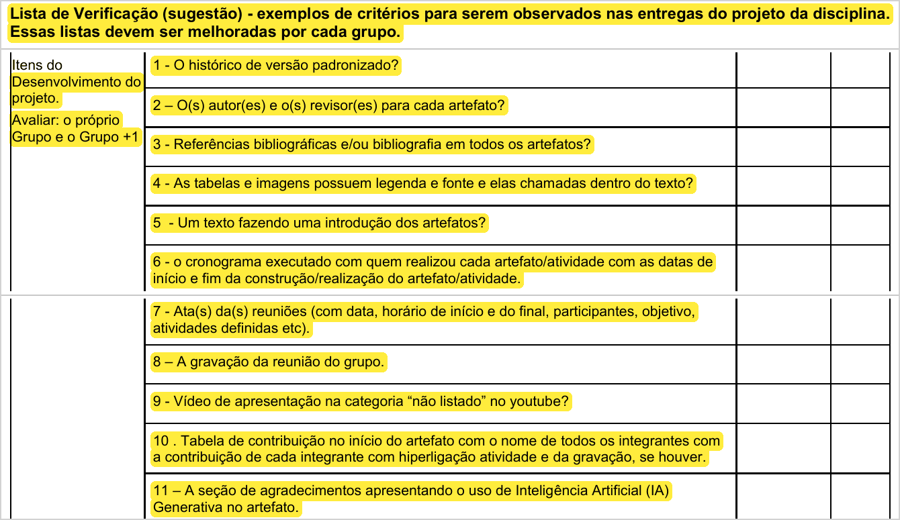
Fonte: SALES (2026, Plano de Ensino, pp. 8–9). Itens que usam esta figura: D1, D2, D3, D4, D5, D6, D7, D8, D9, D10, D11.
Figura 2: Itens de conteúdo 1 a 3 da Entrega 2 (perfil de usuário)
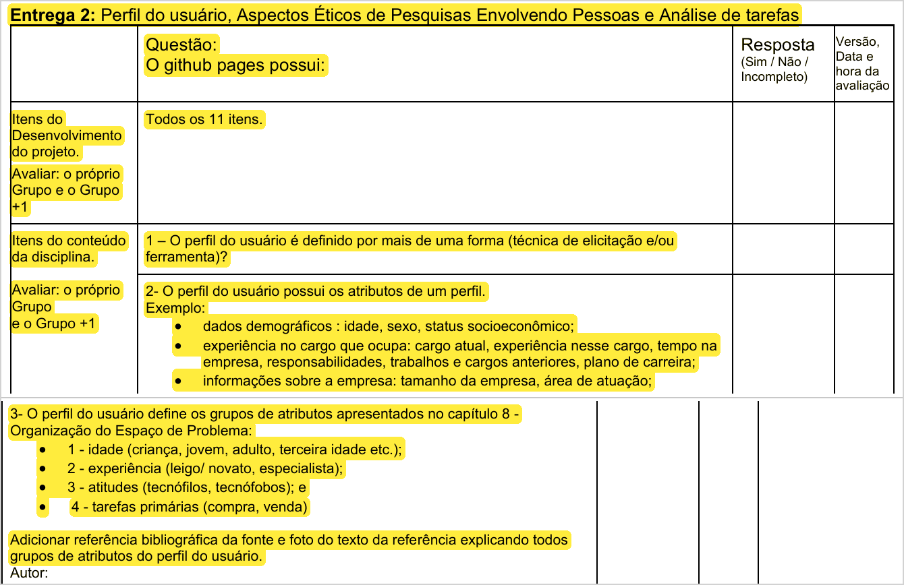
Fonte: SALES (2026, Plano de Ensino, pp. 9–10). Itens que usam esta figura: C1, C2, C3.
Figura 3: Técnicas para coletar dados e levantar requisitos dos usuários
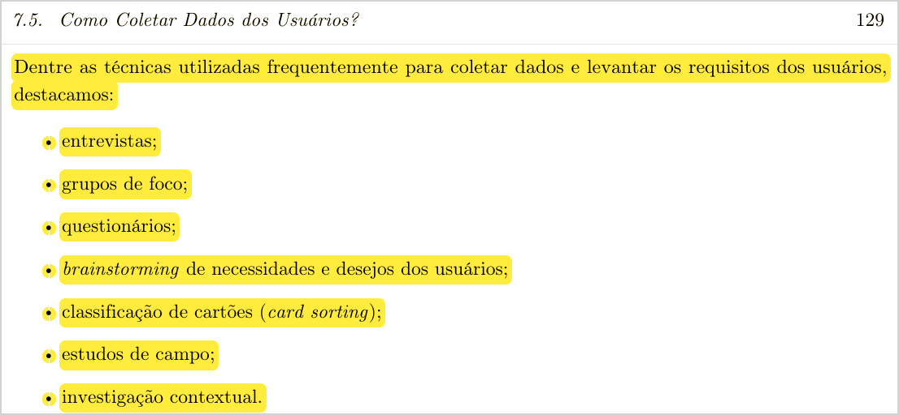
Fonte: BARBOSA et al. (2021, p. 129). Itens que usam esta figura: C1, C8.
Figura 4: Tipos de dados coletados sobre os usuários (Barbosa et al., 2021)
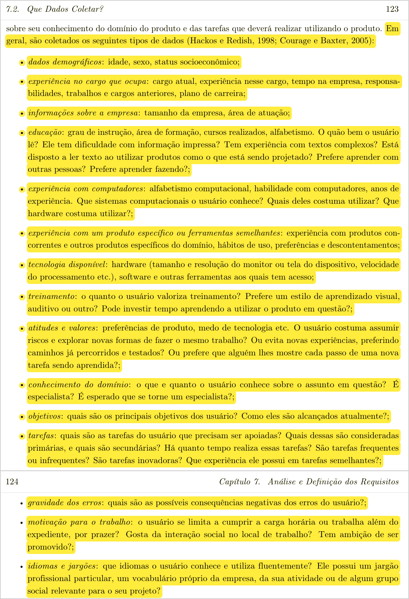
Fonte: BARBOSA et al. (2021, pp. 123–124). Itens que usam esta figura: C2, G1, G2, G3, G4, G5, G6, G7, G8, G9, G10, G11, G12, G13, G14, G15.
Figura 5: Perfil de usuário: definição e grupos de atributos
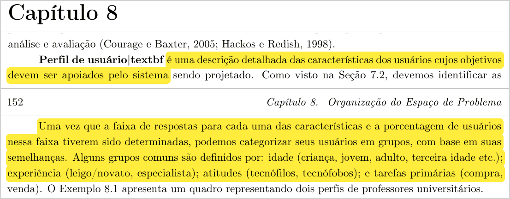
Fonte: BARBOSA et al. (2021, pp. 151–152). Itens que usam esta figura: C3, G86.
Figura 6: Itens de conteúdo 4 a 9 da Entrega 2 (ética, TCLE, técnicas de coleta e cenários)
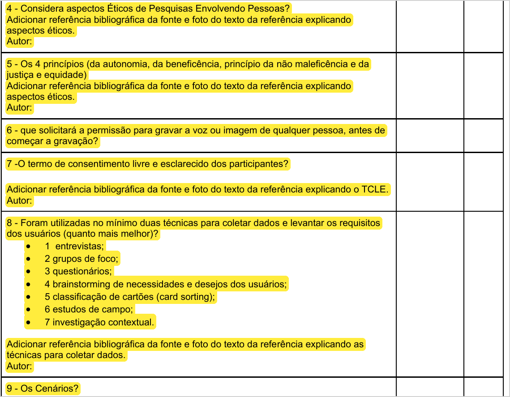
Fonte: SALES (2026, Plano de Ensino, p. 10). Itens que usam esta figura: C4, C5, C6, C7, C8.
Figura 7: Confidencialidade dos dados e anonimato dos participantes
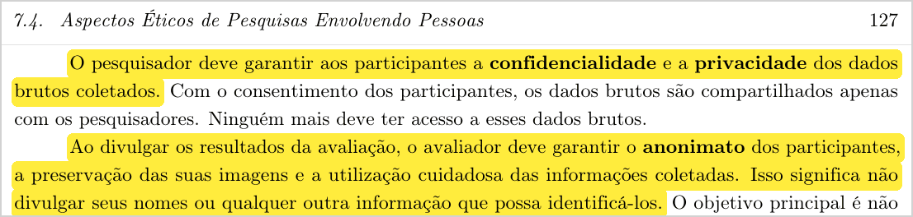
Fonte: BARBOSA et al. (2021, p. 127). Itens que usam esta figura: C4, G22.
Figura 8: Os quatro princípios éticos (Resolução CNS nº 466/2012)
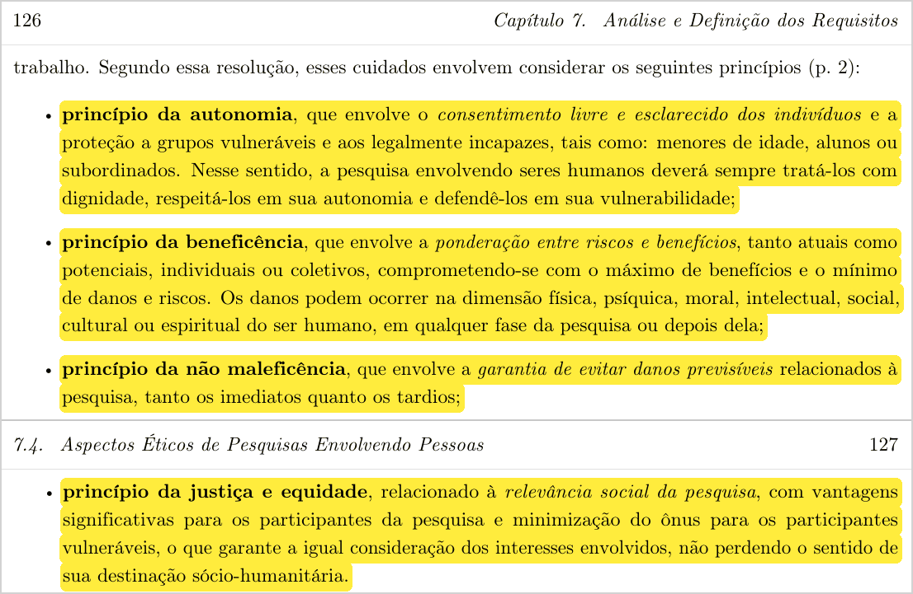
Fonte: BARBOSA et al. (2021, pp. 126–127). Itens que usam esta figura: C5, G23, G25.
Figura 9: Permissão para gravação e consentimento livre e esclarecido
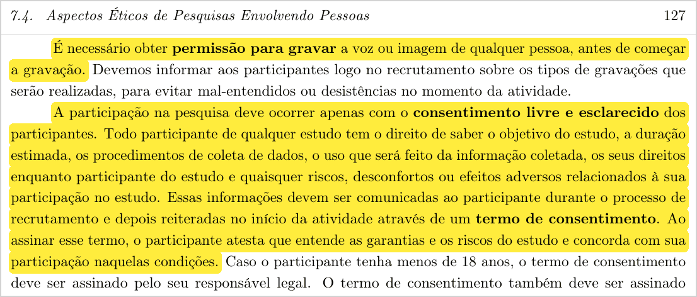
Fonte: BARBOSA et al. (2021, p. 127). Itens que usam esta figura: C6, C7, G21.
Figura 10: Itens de conteúdo 9 a 12 da Entrega 2 (cenários e análise de tarefas)
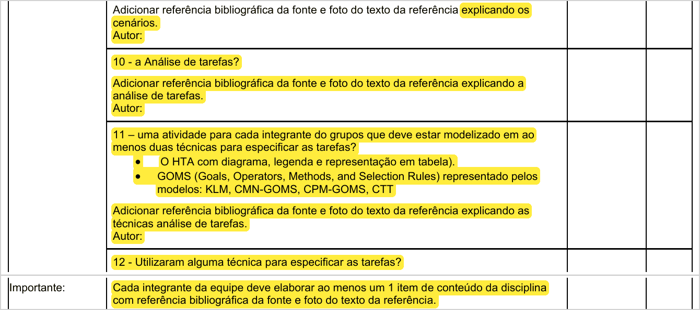
Fonte: SALES (2026, Plano de Ensino, p. 11). Itens que usam esta figura: C9, C10, C11, C12.
Figura 11: Cenários: definição, ator e objetivo principais
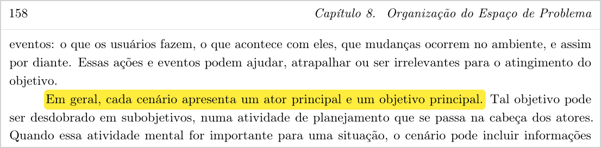
Fonte: BARBOSA et al. (2021, p. 158). Itens que usam esta figura: C9, G80.
Figura 12: Métodos de análise de tarefas: HTA, GOMS e CTT

Fonte: BARBOSA et al. (2021, p. 164). Itens que usam esta figura: C10, C12, G87.
Figura 13: HTA: diagrama, representação em tabela e critério de parada

Fonte: BARBOSA et al. (2021, pp. 165–166). Itens que usam esta figura: C11, G66.
Figura 14: GOMS: objetivos, operadores, métodos e regras de seleção
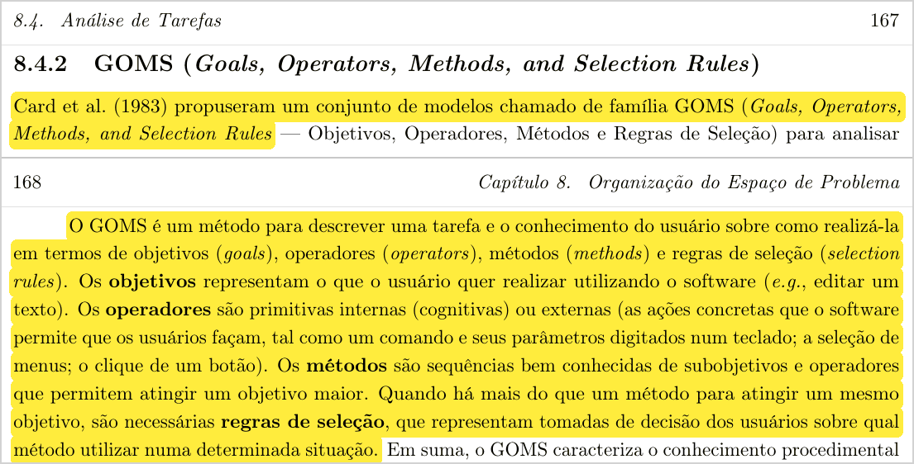
Fonte: BARBOSA et al. (2021, pp. 167–168). Itens que usam esta figura: C11, G85.
Figura 15: CTT: tipos de tarefas e relações temporais
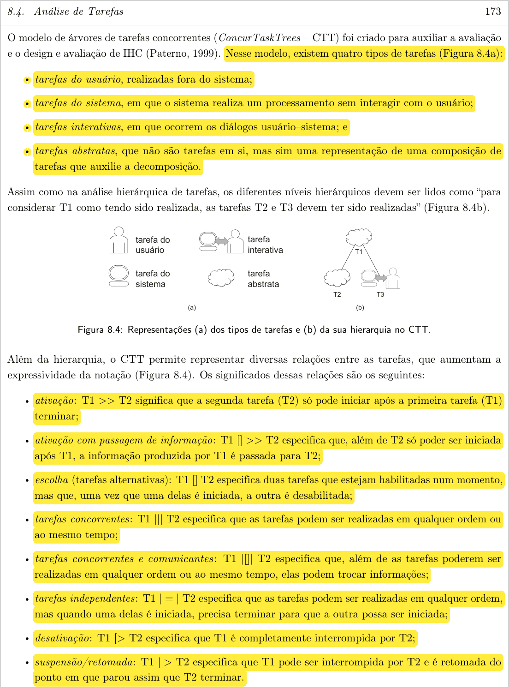
Fonte: BARBOSA et al. (2021, p. 173). Itens que usam esta figura: C11, G43, G44, G45, G46, G47, G48, G49, G50, G51.
Figura 16: Usuários primários, secundários e stakeholders
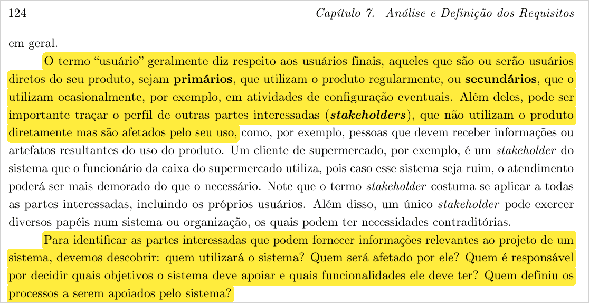
Fonte: BARBOSA et al. (2021, p. 124). Itens que usam esta figura: G16, G17, G18.
Figura 17: Limitações dos arquivos de log e análise competitiva
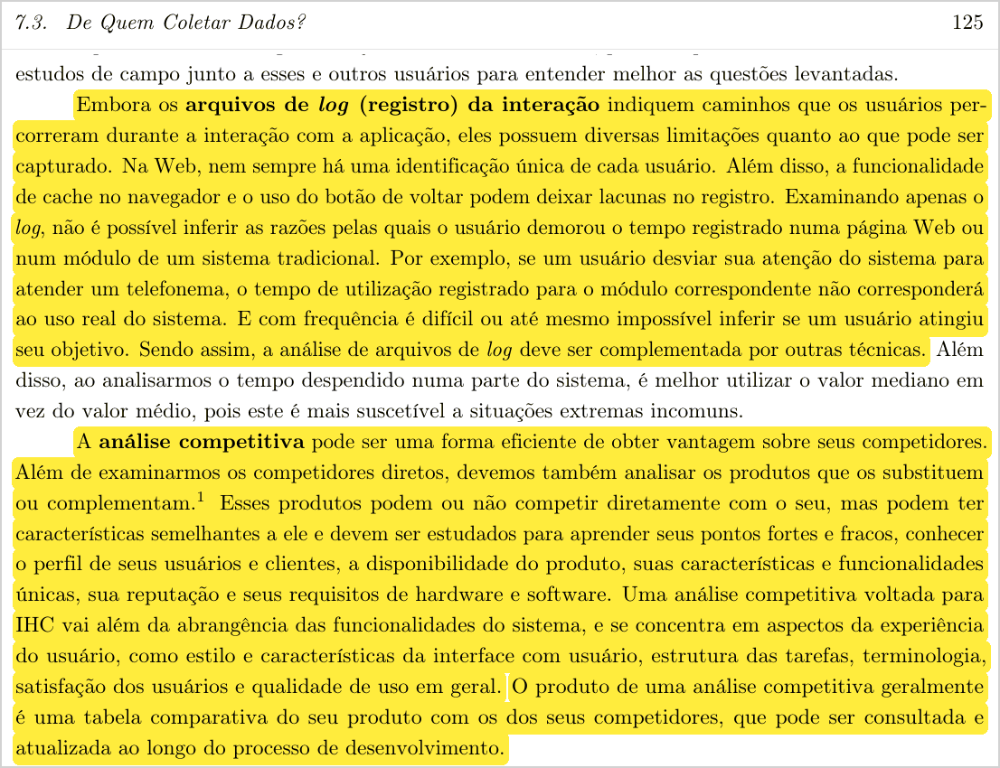
Fonte: BARBOSA et al. (2021, p. 125). Itens que usam esta figura: G19, G20.
Figura 18: Direito de desistir do estudo e dados livres de viés
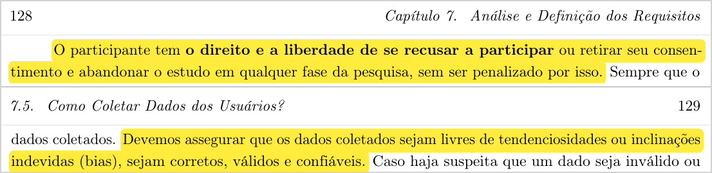
Fonte: BARBOSA et al. (2021, pp. 128–129). Itens que usam esta figura: G23, G24.
Figura 19: Entrevistas: roteiro, perguntas abertas e fechadas, tipos de entrevista
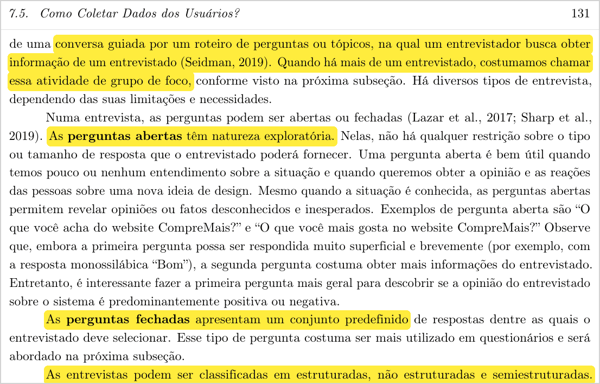
Fonte: BARBOSA et al. (2021, p. 131). Itens que usam esta figura: G26, G27, G28, G29, G31.
Figura 20: Treinamento dos entrevistadores
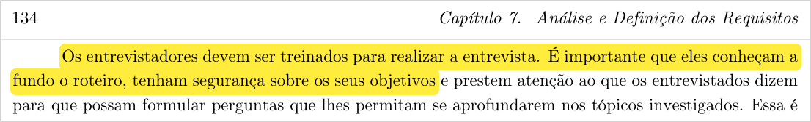
Fonte: BARBOSA et al. (2021, p. 134). Itens que usam esta figura: G30.
Figura 21: Questionários: faixas de valores sem sobreposição e escalas Likert e de diferencial semântico
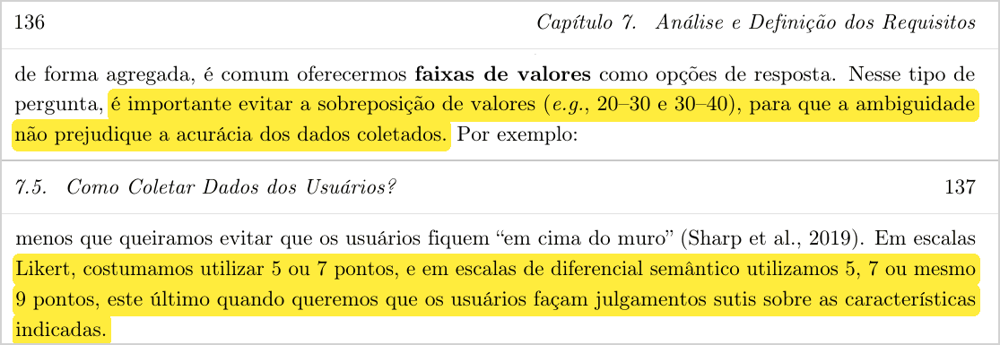
Fonte: BARBOSA et al. (2021, pp. 136–137). Itens que usam esta figura: G31, G32, G33, G34.
Figura 22: Brainstorming de necessidades e desejos dos usuários
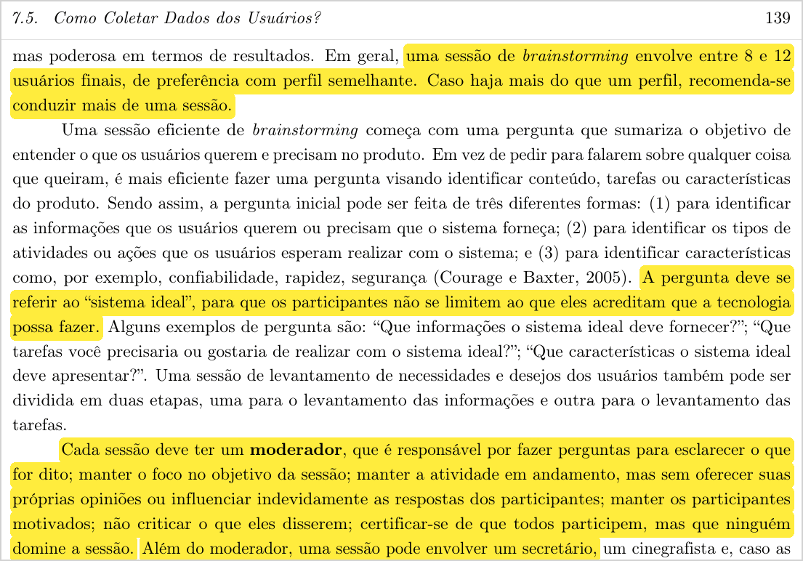
Fonte: BARBOSA et al. (2021, p. 139). Itens que usam esta figura: G35, G36, G37, G39, G40, G41.
Figura 23: Brainstorming: papel e lápis e sessão-piloto
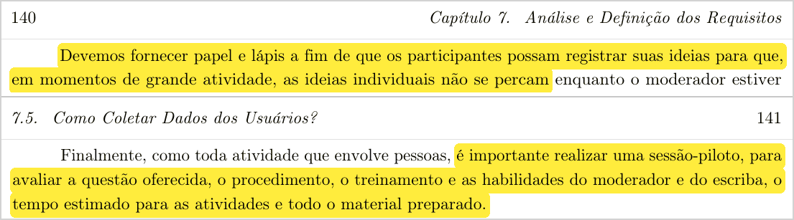
Fonte: BARBOSA et al. (2021, pp. 140–141). Itens que usam esta figura: G38, G42.
Figura 24: CTT: vantagens e limitação quanto ao tratamento de erros
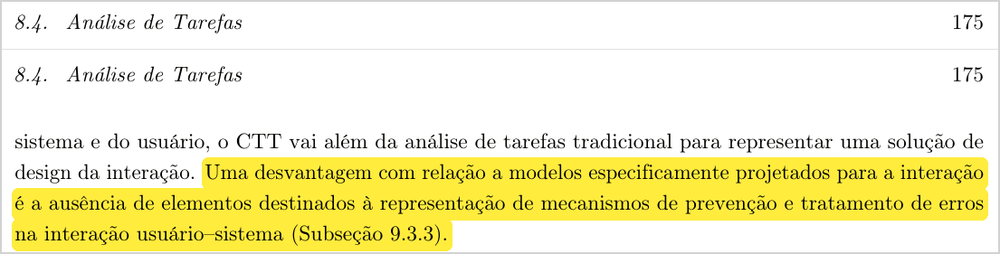
Fonte: BARBOSA et al. (2021, p. 175). Itens que usam esta figura: G52.
Figura 25: Elenco de personas, persona primária e antipersonas
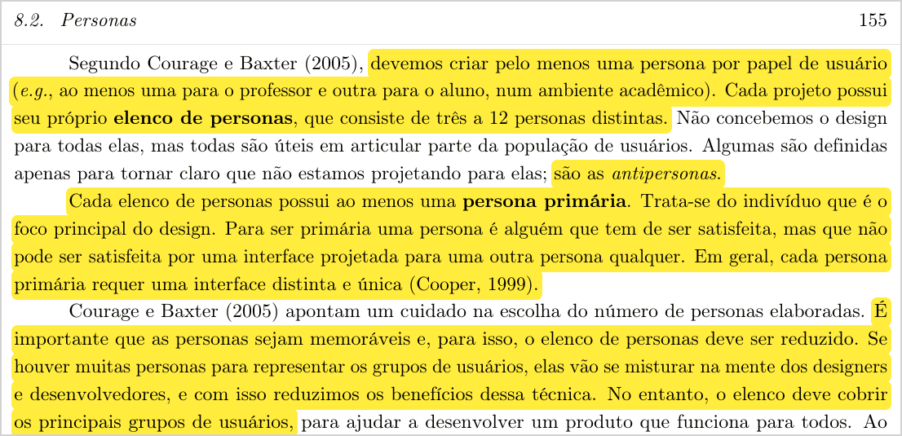
Fonte: BARBOSA et al. (2021, p. 155). Itens que usam esta figura: G53, G54, G55, G56, G57, G58, G59, G79.
Figura 26: 8.4.1 HTA: objetivos antes das ações, decomposição, planos e operações

Fonte: BARBOSA et al. (2021, p. 165). Itens que usam esta figura: G60, G61, G62, G63, G65.
Figura 27: Passos da Análise Hierárquica de Tarefas (Barbosa et al., 2021)

Fonte: BARBOSA et al. (2021, pp. 166–167). Itens que usam esta figura: G63, G64, G67.
Figura 28: Elementos que compõem a descrição de uma persona
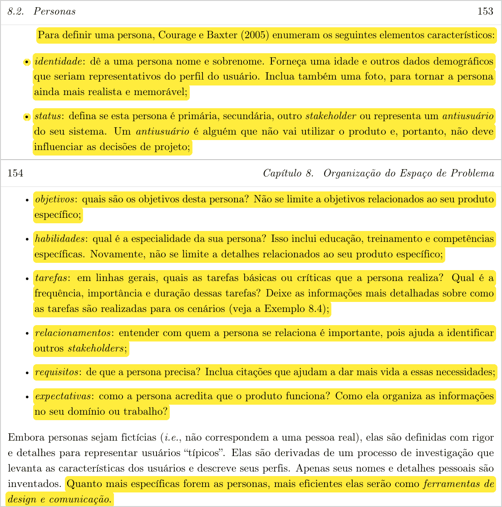
Fonte: BARBOSA et al. (2021, pp. 153–154). Itens que usam esta figura: G68, G69, G70, G71, G72, G73, G74, G75, G76, G77, G78.
Figura 29: Elementos característicos de um cenário e uso de personas como atores
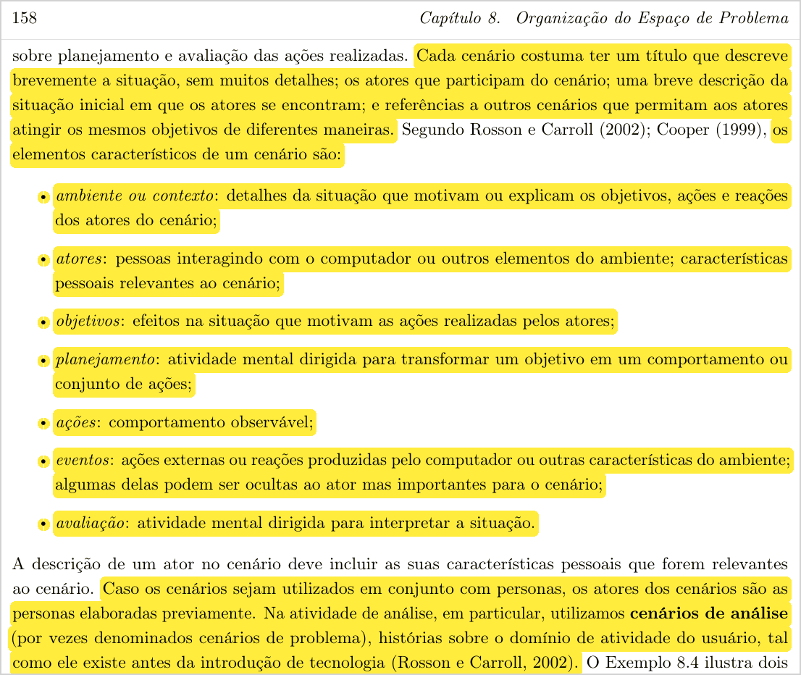
Fonte: BARBOSA et al. (2021, p. 158). Itens que usam esta figura: G81, G82, G83, G84, G87.
Referências Bibliográficas¶
- BARBOSA, Simone Diniz Junqueira; SILVA, Bruno Santana da; SILVEIRA, Milene Selbach; GASPARINI, Isabela; DARIN, Ticianne; BARBOSA, Gabriel Diniz Junqueira. Interação Humano-Computador e Experiência do Usuário. Rio de Janeiro: Autopublicação, 2021. ISBN 978-65-00-19677-1. Versão de 03/05/2021.
- SALES, André Barros de. Plano de Ensino: Interação Humano Computador: Turma 01. Brasília: Universidade de Brasília, Faculdade UnB Gama, 2026. Disponível em: plano de ensino (PDF).